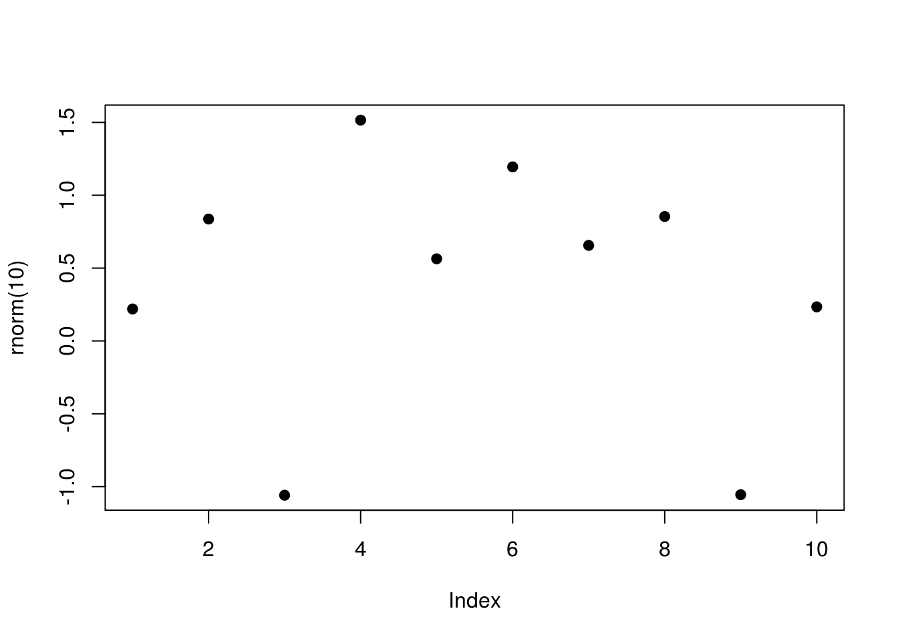
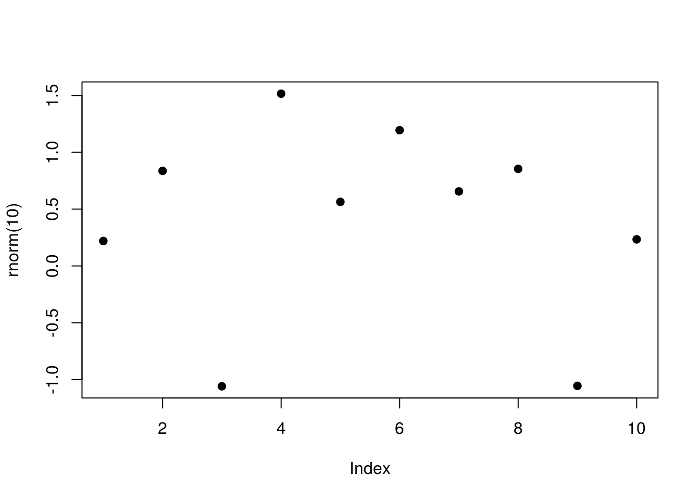

5.4 Cross-output
As explained in https://bookdown.org/yihui/rmarkdown/r-code.html#figures of Yihui Xie (2018), we can place multiple figures side-by-side using the fig.hold='hold' along with the out.width option. As an example below, we have set the out.width="50%":
plot(1:10)
plot(rnorm(10), pch=19) 

Figure 5.1: Side-by-side figures
The main benefits of this approach is that it is easily achieved, and also works for both PDF and HTML outputs.
References
Yihui Xie, Garrett Grolemund, J.J. Allaire. 2018. R Markdown: The Definitive Guide. 1st ed. Boca Raton, Florida: Chapman; Hall/CRC. https://bookdown.org/yihui/rmarkdown/.